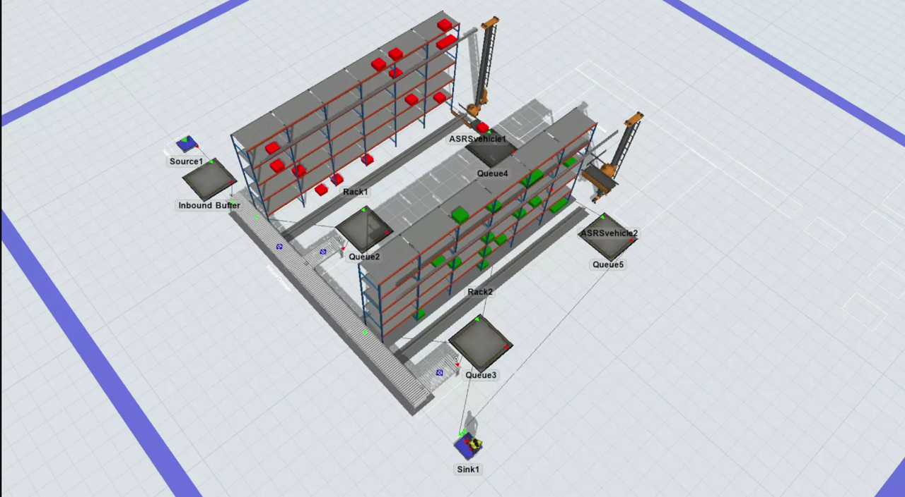
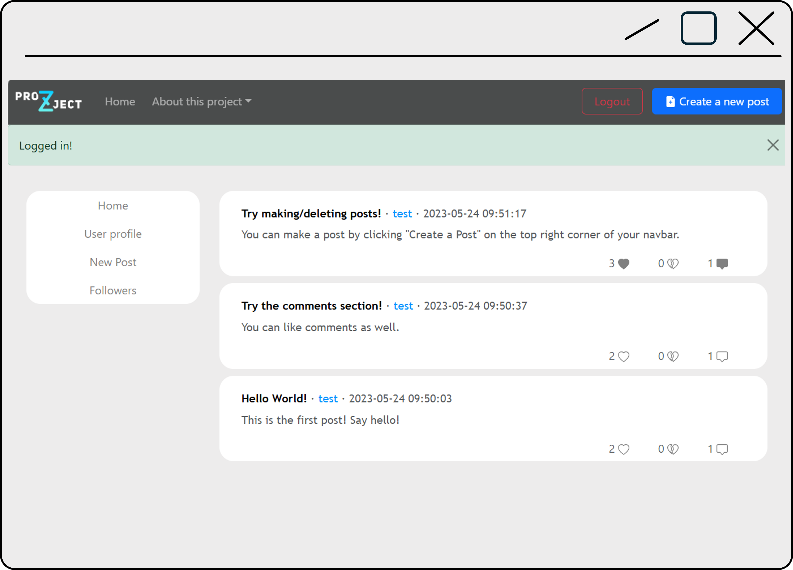
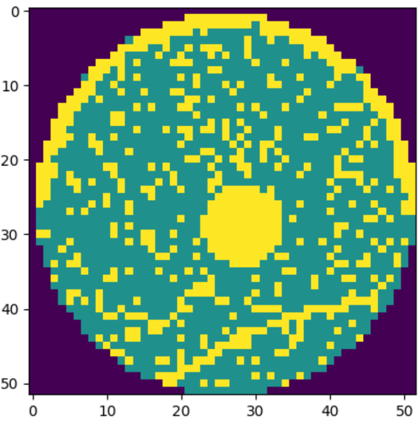

Worked with various tools in the past 3 years, especially after taking 2 ML-related courses and an internship involving OCR.
Plenty of data-cleaning and analysis have been done in R/Python, and even dashboards like Tableau or Power BI.
As a primary major of Systems Engineering, worked on plenty of tools focusing on linear optimization and operations research.

Simulation Projects
Utilizing FlexSim’s discrete-event simulation capabilities, I developed a (minature) scaled model of warehouse operations featuring racking systems, AGVs (Automated Guided Vehicles), and personnel. By simulating material flow, I successfully identified operational bottlenecks and optimized resource allocation within a controlled environment.
Tools Used

WEB-APP/DATABASE PROJECT
I built a simple web-app that imitates a social media site such as twitter/reddit, using HTML and CSS for the frontend, and Python's Flask framework for the backend. The user can create and delete an account, make posts, like & dislike posts, as well as leave comments. Hence, this project also boasts a SQLite database, utilizing sqalchemy to maintain data integrity across the web-app, and storing data such as user accounts and posts.
Languages/Libraries Used
WEB DESIGN PROJECT
A hand-coded personal showcase built with vanilla web technologies. This website is built to train my ability to translate design concepts into functional code, focusing on semantic HTML and custom CSS styling without the use of automated shortcuts.
Languages Used

Machine Learning Project
Engineered a multi-layer CNN featuring convolutional "scanners" for feature extraction to correctly identify multi-class wafer defects from 52x52 wafer maps, implementing a robust training pipeline using Cross-Entropy Loss and the Adam optimizer that achieved 98.1% classification accuracy across 8 distinct defect categories including Edge-Ring, Donut, and Center defects on unseen test data.
Libraries used
or you can find me at the following: